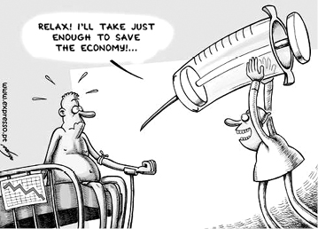

După o prea-lungă (zic eu) vreme de pace, „lumea civilizată” (și se va vedea mai jos ce înseamnă aceasta) se clatină din înseși temeliile ei, care sunt: negustorirea banilor, cămătăria și înșelăciunea. În alte cuvinte, trăim „cea mai mare criză financiară din istorie”. Ce va urma, ar trebui să știm, fiindcă am avut două repetiții ale dramei: „criza” din 1913 și aceea începută în 1929, care au dus mai întîi la foamete, mai departe la cele două războaie precum omenirea nu a mai cunoscut, iar apoi la reașezarea lumii în forma pe care o are pînă în ziua de azi. Ceva asemănător urmează să se întîmple iarăși în viitorul apropiat, pentru că e nevoie de „o nouă ordine mondială”. Va fi înfricoșător, dar nu despre asta ne e vorba acum, ci despre pricina cea dintîi a așa-zisei „crize”. Ei bine, rădăcina din care s-a născut acest rod amar e grozava patimă a iubirii de argint (adică „iubirea de bani și iubirea de avuție mișcătoare și nemișcătoare”, cum zice Sfîntul Episcop Ignatie Briancianinov), în care sus-zisa „civilizație” zace prea-dobitocește de mult, robită cu desăvîrșire. Nimic de mirare în aceasta și nimic nou – ar putea răspunde cineva - căci lumea le face dintotdeauna pe ale ei. Așa zic și eu, doar că acum înrobirea aceasta e mai mare decît oricînd și în afară de ea nu mai e nimic; și, fiindcă iubirea de argint naște toate celelalte patimi, omul e acum împătimit cu desăvîrșire. Și așa se întîmplă nu numai cu necredincioșii, ci și cu toți1 Creștinii cei botezați (mireni, preoți și monahi împreună!), care ar trebui să urmeze lui Hristos cel fără pungă la brîu, fără haină și încălțăminte de schimb și fără adăpost.
De ce este iubirea de argint maică a tuturor patimilor de căpetenie și ucigătoare de suflet? Pentru că banii sînt mijloacele de schimb obștești. De unde urmează că „banul” nu e altceva decît întruchiparea dorinței și a putinței omului de a stăpîni toate bunătățile acestei lumi. De aceea și e cel mai puternic idol (Efeseni 5:5), căruia dintotdeauna i s-au închinat păgînele neamuri, necunoscătoare ale adevăratului Dumnezeu și împătimite de viețuirea trupească, materialnică. Între ele, singur norodul ales al Iudeilor ar fi trebuit să se păzească cu tot dinadinsul de groaznica patimă și înșelare diavolească, cîtă vreme el știa că este mîntuire, că adică viața omenească nu se sfîrșește odată cu petrecerea pămîntească. Dar nu a fost așa: în urma necurmatelor lor căderi din credință - măcar că Dumnezeul tuturor li Se arăta și le vorbea pururea prin prooroci, îndrumîndu-i și poruncindu-le - Iudeii cei tari de cerbice s-au lipit de cele ale lumii mai mult decît Egiptenii, Babilonienii, Elinii și prea-trupeștii Romani. Altfel spus, s-au dat cu totul îndulcirilor pătimașe: îmbuibării, curviei, trîndăviei și, mai cu seamă, drăceștii slave-deșarte și mîndrii. Și, fiindcă toate acestea se dobîndesc lesne prin mijlocirea banilor, Iudeii au ajuns cei mai smintiți iubitori de argint, adică închinători la Mamona, dracul averii, al lui „a avea”, pe care l-au întronizat chiar în Biserica lui Dumnezeu din Ierusalim. Să ne aducem aminte cum i-a aflat Mesia-Dumnezeu pe aceia care ar fi trebuit să-L aștepte cu frică și cutremur: „Și erau aproape Paștile Iudeilor, și Iisus S-a urcat la Ierusalim. Și i-a găsit șezînd în biserică pe cei ce vindeau boi, și oi și porumbei și pe schimbătorii de bani” (Ioan 2:13, 14). Pe nimeni nu supăra aceasta, întregul norod fiind într-un același duh satanicesc de lepădare și hulă, încît a fost nevoie ca Însuși Mîntuitorul să alunge cu mîna Lui negustorii și cămătarii, ca pe niște cîini, precum și erau: „Și, făcîndu-Și un bici din ștreanguri, [Iisus] i-a scos pe toți afară din biserică, și oile și boii. Și schimbătorilor le-a vărsat banii și le-a răsturnat mesele. Și celor ce vindeau porumbei le-a zis: Luați acestea de aici! Nu faceți casa Tatălui Meu casă de negustorie!” (Ioan 2:15, 16) [Căci] „scris este: «Casa Mea casă de rugăciune se va chema, iar voi o faceți peșteră de tîlhari!»” (Matei 21:12, 13).
„Tot ce avem nevoie este o criză majoră, iar națiunile vor accepta Noua Ordine Mondială”.
După aceasta, nebunia iudaică a arghirofiliei (iubirii de argint) și-a atins piscul său și s-a ipostaziat în persoana Iscarioteanului, care a pecetluit pentru totdeauna desăvîrșita lepădare de Dumnezeu a vechiului norod ales, precum e scris: „Atunci s-a împlinit cuvîntul spus de Ieremia Proorocul, care zice: «Și a luat cei treizeci de arginți, prețul Celui prețuit, pe care L-au prețuit fiii lui Israil»” (Matei 27:9).
Iudeii, cel dintîi „neam ales” al lui Dumnezeu, ar fi trebuit să fie lumină pentru neamurile cele păgîne, căci doar pentru aceasta i-a și ales Dumnezeu-Cuvîntul. Iar ei nu numai că n-au fost lumină, dar au adăugat chiar întuneric peste întunericul în care se rătăceau acelea și eres peste eres2. Iar de la arhiereii Anna și Caiafa încoace, urmașii lor și ai lui Iuda cel iubitor de arginți s-au străduit și au izbutit să facă încă mai mult: să înrobească întreaga omenire (împătimită ea însăși dintotdeauna de arginți și de avuție mișcătoare și nemișcătoare). Și cum au făcut? Păi, ca și Iuda, fiul lui Simon Iscarioteanul: au zis că ar fi mai bine să țină ei banii tuturor celorlalți în punga lor, ca s-o păzească și să dea din ea și la săracii pămîntului. Și așa au și făcut: mai întîi, au strîns economiile celor din jur (pentru ca nesăbuiții aceia să nu le risipească nebunește) și din ele au dat tuturor celor care erau din vreme în vreme prea săraci ca să-și împlinească patimile și poftele: ori robi sau slugi de ar fi fost, ori boieri sau împărați. Căci tot omul pătimaș are nevoie de bani ca să-și împlinească pofta numaidecît, fie că e vorba de a cumpăra un pahar de rachiu mai mult, fie un cal, o femeie, o armată, o cetate sau o împărăție întreagă. Chiar din vremea Mîntuitorului se întîmpla, de pildă, ca Cezarul sau vreun general de la Roma, cheltuind în necurmate orgii toată prada smulsă din provincii, să fie în năprasnică lipsă de bani. Cine să-i dea așa degrabă? Iuda cel chibzuit!3 Și tot așa, pînă în vremea de azi, Iuda a luat de la și a împărțit la toată lumea. Dînd o mică dobîndă și luînd una mare, se înțelege de la sine. Iar cînd datornicul sau țara datornicului nu a avut să-i plătească, Iuda a fost silit să îl (o) „execute silit” (așa se zice), adică să-i ia gajul (zălogul, amanetul) pe care acela sau aceea (țara) a trebuit să-l pună la mijloc pentru a se putea împrumuta. Amanet care poate fi inelul de nuntă, casa ori pămîntul împreună cu toate ale lui: de la ierburi și dobitoace, pînă la aur și petrol.
Ei bine, anul acesta se întîmplă că Iuda vrea să strîngă toate datoriile pe care și păgînii, și necredincioșii, și ereticii, și Creștinii le au (sau li se pare că le au!) la banca lui. Căci punga Iudei s-a golit (așa zice el). Încît lumea tremură din rărunchi, precum ziceam, căci datoriile (adevărate sau închipuite) au întrecut cu mult prea mult suma banilor care se află pe toată fața pămîntului. Aceasta e „criza” și trebuie înțeles (din înseși spusele lor) că zisa „criză” va hotărî cu adevărat stăpînirea Iudeilor celor necredincioși în Hristos asupra întregii lumi: asupra pămîntului, subpămîntului, văzduhului și mării, dimpreună cu tot ce mișcă și crește sub soare, și mai cu osebire asupra oamenilor și a sufletelor lor. Cu alte cuvinte, este aproape ceasul acela nenădăjduit de nimeni, cînd neamul Iudeilor cel lipsit de împărăție vreme de atîta amar de ani va ajunge să stăpînească toate neamurile. Ceea ce se va întîmpla negreșit - fie că ne place, fie că nu – pentru păcatele noastre, împlinindu-se astfel proorociile despre împărăția Antihristului cel mare, care va fi un Evreu din neamul lui Dan. Căci aceasta e marea „republică mondială”, sau „Utopia”, nălucită de umaniștii Renașterii și încă de Pithagoras și Platon. Acum îi zice „Noua Ordine” sau „Statele Unite ale Lumii”, cuvinte reci ce ascund răul omenesc desăvîrșit: împărăția cea de trei ani și jumătate a Antihristului, care va fi văzută înainte de a se înstăpîni ca mîntuire de tot răul și ca un rai pămîntesc, dar se va arăta cu adevărat ca o prea-înfricoșată închipuire a iadului.
Nu e loc aici pentru a vorbi despre aceasta în amănunt (poate o vom face data viitoare, urmînd tîlcuirea Sfîntului Andrei al Neochesariei la Cartea Apocalipsei), dar putem desluși mijlocul prin care Iudeii vor înrobi cît de curînd neamurile (cîte au mai rămas neînrobite cu totul). Ei înșiși ne lămuresc în această privință. De pildă, John Adams (1735-1826) zice luminat: „Sînt două metode de a cuceri și de a înrobi o națiune. Una este prin sabie. A doua este prin îndatorare.” Acest pas, îndatorarea, s-a făcut, precum ziceam: toți sîntem datori de mult băncilor lui Iuda, și Iuda își vrea datoria înapoi acum. Dar cum să plătești, de vreme ce nu produci nimic de mult, căci doar pentru aceasta te-ai și îndatorat? Nu altfel decît împrumutîndu-te tot de la Iuda și amanetînd ce ți-a mai rămas prin ogradă: pămînt, apă, lemn, piatră. (În ce ne privește pe noi, Românii, chiar nu știu ce ar mai fi de zălogit!) Iar dacă nu mai ai nimic din acestea, ceva tot ți-a rămas ca să pui zălog: pe tine însuți și pe copiii tăi, care să munciți de acum numai și numai pentru Iuda, încercînd să plătiți o datorie cu neputință de plătit, căci neîncetat dobînda curge la dobîndă. Dar, pentru a ne lumina desăvîrșit, să citim mai bine ce scrie unul dintre cei care au pus în lucrare acest meșteșug drăcesc de simplu:
„Noi, asasinii economici, sîntem de fapt responsabili pentru crearea primului imperiu global. Noi lucrăm în multe moduri diferite, dar probabil cel mai frecvent este să găsim o țară care are resurse, cum ar fi petrol, și apoi aranjăm un împrumut uriaș acelei țări de la Banca Mondială sau de la altă organizație de acest tip. Dar banii nu ajung cu adevărat în acea țară. De fapt, ajung la marile noastre corporații pentru a construi proiecte de infrastructură în acea țară: centrale electrice, parcuri industriale, porturi. Lucruri de care să beneficieze corporațiile noastre și cîțiva oameni bogați din acea țară. Dar nu ajută majoritatea oamenilor deloc. Întreaga țară rămîne cu o datorie foarte mare. Este atît de mare, încît nu pot să o plătească. La un moment dat, noi, asasinii economici, mergem înapoi acolo și le spunem: Ascultați! Ați pierdut mulți bani, nu vă puteți plăti datoriile, așa că vindeți petrolul foarte ieftin companiilor noastre petroliere, lăsați-ne să construim o bază militară la voi în țară, trimiteți trupe și susțineți-le pe ale noastre într-un loc cum ar fi... Irak, sau votați-ne la următoarele alegeri la ONU! Le cerem să privatizeze compania de electricitate, sistemul de apă și canalizare și să le vîndă corporațiilor din SUA și altor corporații internaționale. [...] Deci este o adevărată rețea și este modul tipic de acțiune al FMI și al Băncii Mondiale. Ei îndatorează o țară, și este o datorie atît de mare încît nu pot să o plătească. Apoi, tot ei se oferă să refinanțeze datoria și așa trebuie ca țara să plătească o dobîndă și mai mare. Apoi ceri acest «quid pro quo» pe care-l numești «condiționalitate» sau «bune relații», care înseamnă de fapt că acele țări trebuie să-și vîndă resursele - incluzînd multe din seviciile lor sociale, companiile de utilități, uneori sistemele lor educaționale, penale, de asigurări – unor corporații străine. Deci este o lovitură dublă, triplă, cvadruplă. [...]
„Iuda Iscarioteanul era fur și, avînd punga, lua din ce se punea în ea.”
La fel cum Rezerva Federală [a Statelor Unite ale Americii] ține poporul american într-o poziție de servitute îndatorată, cu datorii perpetue, inflație și dobîndă5, Banca Mondială și FMI îndeplinesc acest lucru la o scară globală. Ideea de bază e simplă: îndatorează o țară fie prin propria imprudență sau prin coruperea conducătorului țării. Apoi, impune condiții sau politici de ajustare structurală, care deseori constau în:
Citind aceste lămuriri, să ne gîndim la ce se întîmplă în această colonie euro-americană numită convențional „România” (de fapt, „Romania”, cu prescurtarea ROM). Astfel, înțelegem ușor pe ce s-a întemeiat „belșugul” nostru din anii trecuți și mai ales care este scopul enormului împrumut făcut zilele acestea de „poporul Român suveran” (prin „reprezentanții săi”, firește) la marile bănci evreiești. Iar dacă tot mai avem îndoieli, chiar reprezentanții aleși de noi în chip democratic ne spun la ce vor folosi acești bani: la refinanțarea băncilor (evreiești, căci altele nici nu sînt) din România și la „dezvoltarea proiectelor de infrastructură”, în colaborare cu oarecari trusturi transnaționale, negreșit. Punct.

1 Prin „toți, înțeleg aici „cei mai mulți”.
2 Iar mai ales au încercat cu tot dinadinsul să stingă făcliile pe care Hristos-Dumnezeu le-a aprins în mijlocul lor: astfel, i-au batjocorit, sau i-au gonit, sau i-au ucis în chip groaznic pe toți Proorocii, Drepții și Apostolii ridicați dintre ei. Și au sfîrșit batjocorindu-L și ucigîndu-L pe Însuși Sfîntul lui Dumnezeu, și Fiul lui Dumnezeu Cel întrupat și Mîntuitorul tuturor, pe Cel așteptat de ei din vechime.
3 Așa înțelegem cum au izbutit arhiereii să-l înfricoșeze pe acel puternic guvernator Pilat, încât să-și calce propria dreptate și să-l ucidă totuși pe Iisus. Așa înțelegem cum, numaidecît după aceea, aceiași arhierei și urmașii lor au izbutit să-i facă pe împărații Romani să-i ucidă pe apostolii și pe mărturisitorii lui Hristos. Căci trebuie să știm (fără a le lua cumva apărarea acelor sălbatici!) că cezarii de la Roma nu aveau nimic împotriva Creștinilor, politica lor fiind tocmai una desăvîrșit „ecumenistă”. Atîta doar că mulți dintre sfetnicii și bancherii lor erau Iudei romanizați, care ascultau întru totul de poruncile cărturarilor și fariseilor de la Ierusalim.
4 Se numește John Perkins și a lucrat ca mijlocitor între CIA, băncile mondiale și guvernele unor state din America Latină. Nu de mult, a publicat o carte numită (în traduce rea românească) „Memoriile unui asasin economic”. Aici, citatele sînt din filmul „Zeitgeist — addendum” (o lucrare antihristică de altfel, despre care ar trebui vorbit mai mult, cîndva).
5 Rezerva Federală a SUA, deci banca ce emite dolarii, nefiind instituție a Statului American, precum s-ar putea crede, ci proprietate a cîtorva familii evreiești! Ceea ce se arată pe larg în film. Vom mai vorbi despre aceasta.